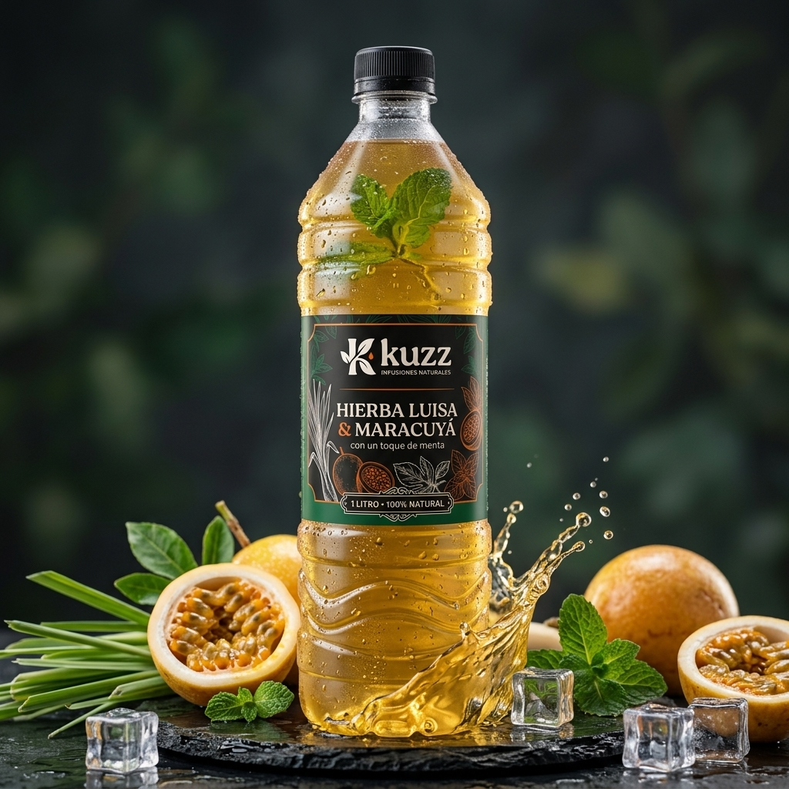

Fórmula Insignia
Hierba Luisa, Maracuyá & Menta
Infusión dorada translúcida con aroma cítrico fresco, zumo colado de maracuyá maduro y un cogollo de menta activado en botella.
Perfil: Refrescante y digestiva.
Momento: Mediodía soleado y después de almuerzo.